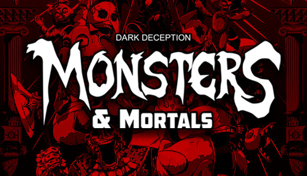

Strona nie jest na serio i nie ma zamiaru nikogo urazić

Mortals and Monsters
Mortals and Monsters to gra przeglądarkowa, w której gracze wcielają się w postaci śmiertelników lub potworów i walczą ze sobą na różnych arenach. Gracze mogą wybierać spośród wielu różnych postaci, każda z unikalnymi umiejętnościami i atakami. Gra jest dynamiczna i pełna akcji, a także oferuje wiele różnych trybów rozgrywki, takich jak deathmatch, zabójstwa i kontrola strefy.
Plastic Warfare
Plastic Warfare to gra sieciowa z gatunku FPS, w której gracze walczą ze sobą w różnych trybach rozgrywki, takich jak deathmatch, zabójstwa i tryb wyścigu. Gracze mają do dyspozycji szeroką gamę broni i gadżetów, a także możliwość personalizacji swoich postaci. Gra jest pełna akcji i nieprzewidywalnych zwrotów akcji, a także oferuje wiele różnych map i trybów gry.
Dark Deceptions
Dark Deceptions to gra przygodowa z gatunku horror, w której gracze wcielają się w postać dziecka uwięzionego w labiryncie pełnym potworów i pułapek. Gracze muszą uważać na swoje otoczenie, unikać niebezpieczeństw i rozwiązywać zagadki, aby przejść przez każdy poziom i uwolnić się z labiryntu. Gra jest pełna niepokojących i przerażających momentów, a także oferuje wiele różnych opcji i poziomów trudności, dzięki czemu każdy gracz może dostosować grę do swoich potrzeb i preferencji.
Plants vs Zombies: Battle for Neighborville
Plants vs Zombies: Battle for Neighborville to gra akcji z gatunku tower defense, w której gracze wcielają się w rośliny lub zombie i walczą ze sobą na różnych polach bitew. Gracze mają do dyspozycji szeroką gamę roślin i zombie, a także możliwość personalizacji swoich postaci. Gra oferuje wiele różnych trybów rozgrywki, takich jak deathmatch, kooperacja i tryb wyzwań, a także dynamiczne i pełne akcji walki.
Plants vs Zombies 2
Plants vs Zombies 2 to kontynuacja popularnej gry tower defense Plants vs Zombies. Gracze muszą bronić swojego domu przed inwazją zombie, stosując różne gatunki roślin, które mają unikalne umiejętności. Gra oferuje nowe rośliny i zombie, a także wiele nowych trybów rozgrywki, w tym przygody po różnych epokach, wyzwania i turnieje. Gracze mogą także grać z innymi graczami w trybie wieloosobowym i zdobywać punkty za osiągnięcia w grze. Plants vs Zombies 2 to gra pełna humoru i zabawy, która zachwyci fanów oryginalnej gry oraz nowych graczy.
Team Fortress 2
Team Fortress 2 to gra sieciowa z gatunku FPS, w której gracze wcielają się w jedną z dziewięciu postaci i walczą ze sobą w drużynach na różnych mapach. Gra oferuje wiele trybów rozgrywki, w tym capture the flag, kontrola punktów, wyścig i wiele innych. Gracze mogą także korzystać z różnych broni i gadżetów, a także personalizować swoje postacie. Gra charakteryzuje się humorem i absurdalnymi sytuacjami, które z pewnością rozśmieszają graczy. Team Fortress 2 to gra, która zyskała sobie wielu fanów na całym świecie i wciąż jest popularna po latach od wydania.
LEGO ® Gwiezdne Wojny™: Saga Skywalkerów
LEGO ® Gwiezdne Wojny™: Saga Skywalkerów to gra przygodowa oparta na filmach z serii Gwiezdne Wojny. Gracze mogą wcielić się w postacie z filmów i przemierzać różne planety, rozwiązując zagadki i walcząc z wrogami. Gra oferuje wiele różnych poziomów, które odzwierciedlają sceny z filmów, a także wiele dodatkowych misji. Gracze mogą także korzystać z unikalnych umiejętności swoich postaci, takich jak Moc czy specjalne ataki. LEGO ® Gwiezdne Wojny™: Saga Skywalkerów
O mnie
Nazywam się Antek i jestem wielkim miłośnikiem gier. Chętnie kupuję gry dla znajomych i zapraszam ich do wspólnej rozgrywki, nawet jeśli odmówią to im każe ze sobą grać. Moim ulubionym typem gry jest FPS, ale uwielbiam także gry z gatunku horror i tower defense. Poza graniem, jestem bardzo dobry generałem.